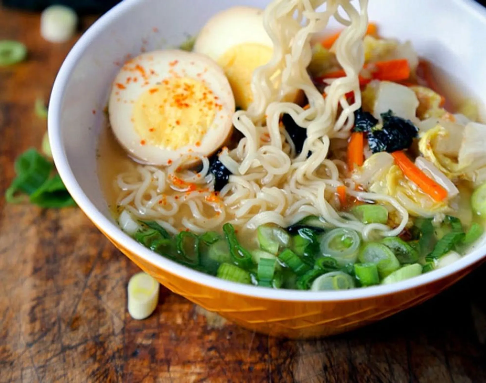

Miso Ramen (味噌ラーメン)

What is "Miso Ramen" ?
Miso ramen is a Japanese noodle soup.
It is called Miso Ramen because its broth is made from miso along with chicken stock, vegetables, and ground pork.
This kind of ramen soup is thick and rich.
The noodles should be fresh and are best when springy,
chewy, and yellow.
Ingredients
- 1 cup Napa cabbage (shredded or finely chopped)
- 1/3 cup carrots (peeled and cut into thin strips)
- 1 tablespoon vegetable oil
- 2 cloves garlic (finely chopped)
- 3 scallions (finely chopped)
- 2 packages dry or fresh ramen noodles, or egg noodles
- 4 cup low sodium chicken stock
- 2 boiled eggs (optional)
Miso Tare:
- 1/2 teaspoon tobanjan
- 1 teaspoon ginger
- 1/4 cup red, white, or awase miso paste
- 2 tablespoon cooking sake
- 2 tablespoon mirin
- 1/2 teaspoon sesame oil
How to make
- Mix the ingredients for the miso tare in a bowl and set aside
- In a medium size pot, heat up chicken stock.
- In a separate pot, bring about 6 cups of water to boil.
- In a medium size pan over high heat, add oil and garlic and cook for 1 minute.
- Add cabbage and carrots and cook for 2 minutes until carrots are tender but still yielding a crunch. Set aside.
- When water is boiling, add ramen noodles and cook and follow instructions on the package (usually about 3 minutes). Drain and set aside.
- Divide miso tare evenly between 2 bowls (about 2 tablespoons each).
- Add ramen noodles and chicken stock to the bowls.
- Stir well and top with scallions, cabbage, carrots and pickled eggs. Serve hot.
Back to top ▲
Menu